This guide provides the steps required to configure Provisioning for Concur.
Notes
In order to enable UD support for Concur, contact the Okta support team and request the following Early Access feature flag be enabled for your Okta org:
PROV_CONCUR_CLOUD_DIRECTORY_ENABLE
You will have to create a new instance of the Concur application.
The Provisioning capabilities for your Concur app depend upon factors such as your Concur tenant edition. Refer to the Conditions section below for more details.
Additionally, your tenant may have Expense features that require employee data this is not capable of being populated by the current Concur User API, and therefore is not supported by the Okta User Provisioning application. If this is the case, you will be required to populate the additional data using Concur specified import files.
The fields that can be populated by the User Provisioning app are specified: here.
A base user record will not be fully provisioned in the following cases:
Your Concur tenant uses the Reimbursement Method field. See below for details:
Standard Edition - customers who have more than one reimbursement method (Expense Pay, Payroll, Co. Check) can provision users but must import the reimbursement values via a file. Possible values are:
If the customer uses ADP Payroll, then the ADP payroll fields must be populated manually or via an import file.
If Expense Pay or AP Check is the single reimbursement method used by customer, then Okta does not need to populate this data (a blank value will populate the single, default method).
Standard-to-Professional Upgrade Edition - customers using the corresponding Payment Manager batches (that are populated by the values in this field) can provision users, but must import these values via a file. Consult with Concur for possible solutions. For example, if you choose to use one Accounting file, you would not need the individual batches that these field values populate.
Professional Edition – this field does not apply to Professional Edition at this time.
If your Concur tenant uses Cash Advance fields, the Cash Advance Account Code and Cash Advance Approver need to be manually entered or imported via a file, as these fields are not supported in the Concur API.
If your Concur tenant has more than one Travel Policy, then this field needs to be set manually or via a file import. Generally, for Standard travel there is only one travel policy. In this case, a blank value via Okta will populate the default value.
If your Concur tenant uses Multiple Employee Forms, provisioning a base record via Okta is not possible.
The following provisioning features are supported:
Schema Discovery
Create Users
Note that Okta only creates a user’s base profile in Concur.
Update User Attributes
Deactivate Users
Sync Password
Note: Import of Users is currently supported only in CSV format.
It is important that you determine what Edition of Concur you are using before you start configuring provisioning. Here we describe our support for each edition, and how to determine what edition you are using.
Note that there are few special attributes in Base user profile, whose values vary depending on your Concur Edition, these are described in the Attributes in Base Profile section.
| EDITION | SUPPORT |
|---|---|
| SMALL BUSINESS | The Okta-Concur integration does not support the Concur Small Business Edition. |
| STANDARD EDITION | Okta supports provisioning functionality for Concur Standard Edition. Note that Okta only creates a base user record in Concur. Standard Edition clients that are not using extended features can use the User Provisioning app to add records without having to import additional data. However, even some Standard Edition features require additional file imports or manually added information in Concur by the client. |
| PROFESSIONAL | Okta supports provisioning functionality for Concur Professional Edition. Note that Okta only creates a base user record in Concur; you may require file imports for attributes (such as employee banking data) not supported by the Concur API. Many Expense features require employee data that User Provisioning applications cannot populate since the current User API does not currently include those features. |
| PREMIUM | Okta supports provisioning functionality for Concur Premium Edition. Note that Okta only creates a base user record in Concur; you may require file imports for attributes (such as employee banking data) not supported by the Concur API. Many Expense features require employee data that User Provisioning applications cannot populate since the current User API does not currently include those features. |
A client can determine the Concur Edition type by having their administrator login to their Concur site. If they see a Setup menu with a sub option for Expense within the Administration menu (as shown below), then this is a Standard Edition site. If the client administrator does not see the Expense menu within the Setup menu, then they have a Concur Professional Edition site:
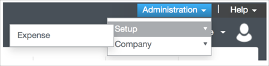
Letter of Authorization (LOA): Concur requires a letter of authorization before you can start using Okta for provisioning. If you are implementing Provisioning, or for Provisioning plus Single Sign On (SSO):
Download the following document, sign it, and scan the signed copy into a pdf file.
Concur Letter of Authorization - Provisioning or Provisioning plus SSO
Click the link below to generate a Provisioning Enablement Request email to Concur. Fill in the fields and attach the LOA.
Note: If the above link does not generate an email message on your system, open this Email Text and copy and paste the information into a new email message.
Universal Directory for Concur is an Early Access feature. If you would like to turn on UD for Concur, contact Okta Support to enable the following feature flag: PROV_CONCUR_CLOUD_DIRECTORY_ENABLE.
You must have Concur Expense service enabled. That is, Concur Travel only is not supported.
Before you begin setting up the application, go through the Attributes in Base Profile section as you will need to obtain allowed values from the Concur Implementation team, which are associated with special attributes in Concur, such as Ledger Key.
Before setting up provisioning, ensure that Web Services subscription is enabled for your Concur tenant. Contact Concur to get the Web Services Administrator Profile set up; this is a one-time required set up. Once the subscription is enabled, you will be able to use the provisioning application in your Concur Production tenant. The Okta application is listed globally in Concur Production environment, and no further steps need to be taken to enable the Okta application in you Concur Web Services App center.
Enable the Okta Connect app in the Concur App center by following these steps:
Login to Concur (commonly, https://www.concursolutions.com) with your Concur Admin account.
Navigate to Administration > Company > Web Services.
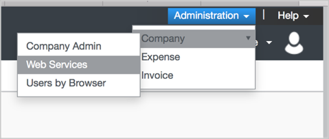
Navigate to Enable Partner Application, then find Okta Connect in the list and make sure it is Enabled.
Note: Contact Concur to enable the Okta application for your Concur tenant if the application does not appear in the Web Services section.
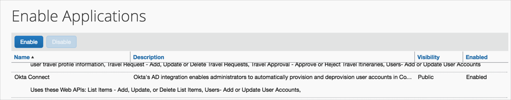
Important: Before you start configuring provisioning, make sure you have determined what Concur Edition you have, and have also met all the requirements we provided.
Configure your Provisioning settings for Concur as follows:
Check the Enable provisioning features box.
In the API Authentication section, click Authenticate with Concur:
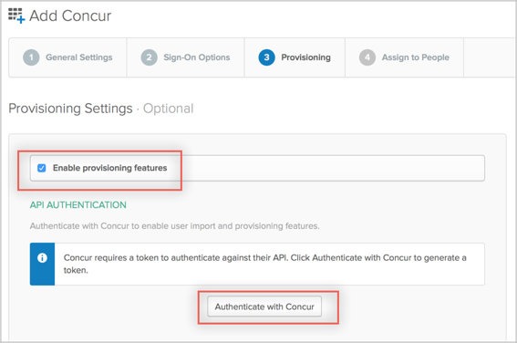
A new window will appear displaying the Concur login page. Enter your Concur Admin credentials and log in.
A message will appear with option to allow Okta to connect to your tenant. Choose Allow for provisioning to work.
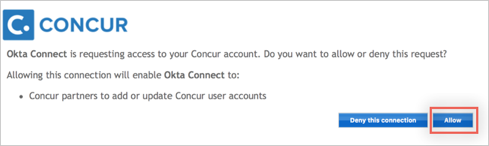
Now your app is authenticated, scroll down the Provisioning page and select those provisioning features you want to enable:
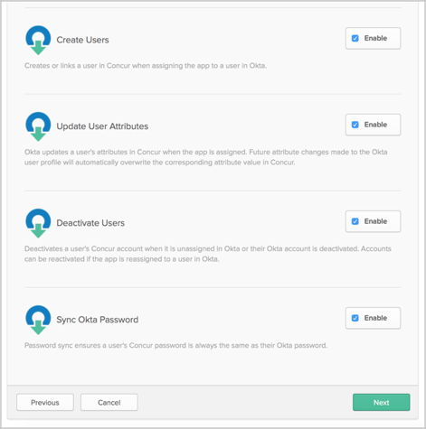
Click Next.
You can now assign people to the app (if needed) and finish the application setup.
The required attributes in Concur depend on your Concur tenant settings. Follow the steps bellow to add all required user attributes to the user profile:
In Okta, from the Admin dashboard, select Directory > Profile Editor.
Select the APPS section in the left navigation bar, then find your app in the list.
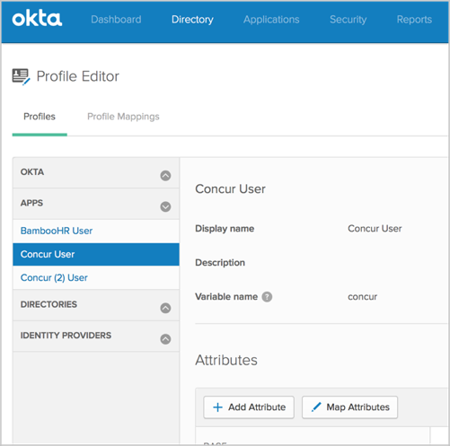
Select Add Attribute, then Refresh Attribute List to see the latest list of Concur attributes.
Remember to add all attributes associated to linked-lists in your Concur tenant. For example, if you are using Concur Standard Edition and have policy groups enabled, you will have to add Expense Policy Group attribute (OrgUnit1) though it will not show as a required attribute. This is because Expense Policy Group (OrgUnit1) attribute is part of a linked-list with Employee Administration Country (custom21).
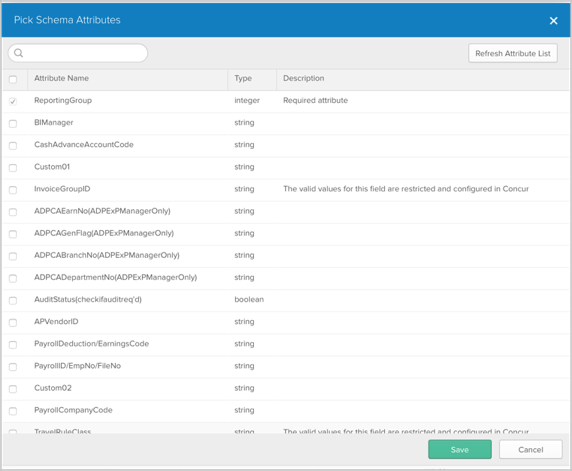
Required Concur attributes are pre-selected for you on this page. Additionally, you can add more attributes of your choice.
Note: If you are using Standard Edition with Groups enabled, be sure to add the Expense Policy Group (orgUnit1) attribute.*
Save the profile.
Setup is now complete.
There are few special attributes in Base user profile, whose values vary depending on your Concur Edition. Pay special attention to these attributes:
| Attribute | Description |
|---|---|
| Locale Name | Select value from drop down menu. Be sure to select a value that is applicable to your Concur tenant. If a locale value is not enabled in your Concur tenant, this field is left blank on the user's Concur profile, or you may experience errors. |
| Country Code | Select value from drop down menu. Be sure to select a value that is applicable to your Concur tenant. If a locale value is not enabled in your Concur tenant, this field is left blank on the user's Concur profile, or you may experience errors. |
| Currency Key | Select value from drop down menu. Be sure to select a value that is applicable to your Concur tenant. If a locale value is not enabled in your Concur tenant, this field is left blank on the user's Concur profile, or you may experience errors. |
| Ledger Key |
|
For these attributes Concur has a pre-defined list of allowed values per tenant, and you will experience errors if you use a wrong value. So make sure you know what to enter here.
This application supports Schema Discovery feature, which allows to extend the list of attributes to sync with Concur..

Concur may have dependency between certain attributes, for example in Standard Edition with Groups support, Expense Policy Group values depend on Employee Administration Country value.
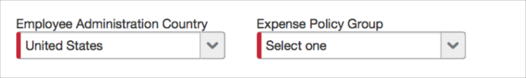
These are identified as linked-lists in your Concur tenant. Another example of linked lists are Division, Department, and Cost Center.
If you are adding one of dependent attributes, make sure you add all attributes it depends on. In other case you won't be able to set a value for it without providing values for it's parent attributes.
Most common errors are:
If you see an error that states user e-mail is already taken, contact Concur support and ask to make it available for your tenant.
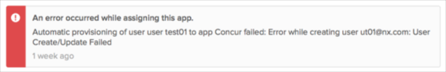
Concur's required field was not added to the User profile or had an empty value:
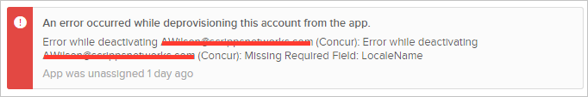
To fix this, make sure you added the required field to your Application User profile and provide it with a valid value.
Set a wrong value to a field, for which valid values are strictly defined:
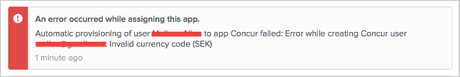
To fix this, provide a field with a valid value. Check Schema Discovery section on how to get valid values.
In order to enable UD support for Concur:
Contact Okta support team and request the following feature flag be enabled for your Okta org: PROV_CONCUR_CLOUD_DIRECTORY_ENABLE.
Once the feature is enabled, add a new instance of the Concur App.
Note: We do not recommend reusing your existing instance of the Concur app for UD features.
Follow the steps above to configure the new application powered with UD features.